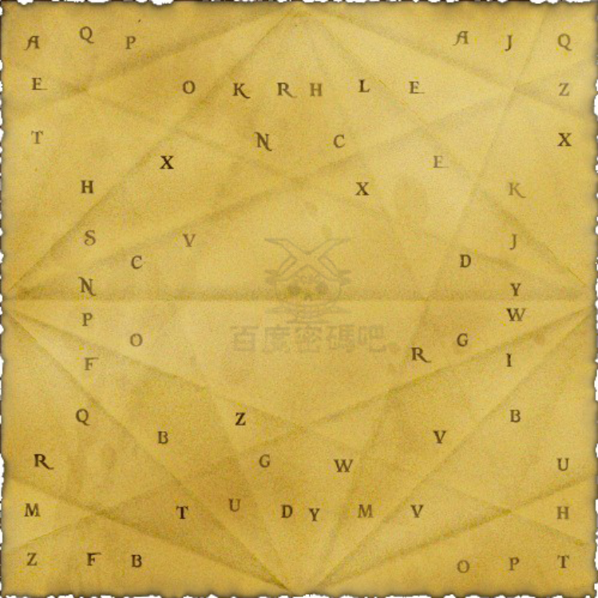

今天是在久违的欢笑声中度过的。
小赛文兄弟是最兴奋的那一对，上船之后，他们第一次看到这种欢庆，他们不会再记得朗姆酒是不能给小孩子跟女人喝的。
“飞刀手”杰克今天也觉得特别欣慰，他不知多少遍地吹嘘了在昨天的战斗中干掉了多少个西班牙崽子。
喝到傍晚，杰克要表演他的飞刀绝技，他说可以用羊皮纸折成的飞刀把海鸥打下来。
当然没有人相信他。但伙计们还是抱着极大的兴趣跟着他到了甲板。
那时他还在找借口，说一肚子的酒影响了他伟大的手法，费了很大劲，反复折了好几遍之后，他才说好了。
当然，如同预料的，这东西飞了数尺远就掉在了船头的甲板上。
伙计们嘲笑他吹牛，他只嘟嘟囔囔地说什么用纸只能折成三角形的翅膀，还少了点什么才算完成。
可是我把那件鬼东西捡了起来，夹在这里，有时间慢慢研究。
【补丁】
纸张中间是应该有一条竖折痕的（即左右对折的结果），但是在图像处理的时候给处理没了。